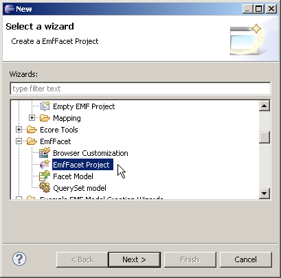

First, you should add org.eclipse.emf.facet.widgets.nattable.workbench to your plug-in dependencies.
Use:
NatTableEditorFactory.getInstance().openOn(elements, editingDomain, tableConfiguration, context, parameter);
null otherwisenull.Use:
NatTableView.openOn(elements, editingDomain, tableConfiguration, context, parameter);
null otherwisenull.The NatTableWidget can be used in any Composite. If the widget is not provided with an IEditingDomainProvider, a default one will be used.
public NatTableWidget(final Composite parent, // The Parent Composite
final IEditingDomainProvider editingDomainProvider, // An Editing domain provider
final TableInstance tableInstanceParam) // An instance of TableInstance
Several actions are already implemented in the NatTableWidget to be called from your composite, such as :
Other actions are implemented direclty in the widget itself, such as :
You need to call the menuAboutToShow(IMenuManager) method to use those actions.
You can easily add a row by using the method addRows(List<EObject>).
All the informations contained in a table can be serialized thanks to an EMF metamodel. TableInstance keep several table attributes such as :
As a prerequisite, you need to create an EMFFacet project :

context parameter that was passed when opening the table.parameterValues parameter contains a value that you can retrieve using the key InstantiationMethodParameters.getEditingDomainParameter().getName().Here is an example of a query that creates a UML Class in a Package that is passed as context:
public Class evaluate(final org.eclipse.uml2.uml.Package context,
final ParameterValueList parameterValues) throws ModelQueryExecutionException {
EditingDomain editingDomain = (EditingDomain) parameterValues.getParameterValueByName(
InstantiationMethodParameters.getEditingDomainParameter().getName()).getValue();
ICommandFactory commandFactory = CommandFactoriesRegistry.getInstance()
.getCommandFactoryFor(editingDomain);
Class newClass = UMLFactory.eINSTANCE.createClass();
Command command = commandFactory.createAddCommand(editingDomain, context,
UMLPackage.eINSTANCE.getPackage_PackagedElement(), newClass);
editingDomain.getCommandStack().execute(command);
return newClass;
}
Cell editors for unary features must be defined in classes that implement the IModelCellEditor interface. You must implement two methods:
activateCell(…) : This method must create a SWT Control under the given parent Composite.getValue() : This method must return the value currently in the control. This is the value that will be assigned to the feature.When the user accepts the change, you must call the commit() method on IModelCellEditHandler so that the value is set on the feature.
If the user cancels the edition, you should simply call dispose() on your cell editor control.
Cell editors for n-ary features must be defined in classes that implement the INaryFeatureCellEditor interface.
You must implement the activateCell(…) method, to create the SWT Control for the cell editor under the given parent Composite.
For editing n-ary features, you don't call the commit() method. Instead, you should directly execute commands on the given EditingDomain to edit the feature. The commands should be created using the command factory. For example:
ICommandFactory commandFactory = CommandFactoriesRegistry.getInstance().getCommandFactoryFor(editingDomain); Command removeCommand = commandFactory.createRemoveCommand(editingDomain, eObject, feature, element);
Once you have implemented your cell editors, you can reference them in a celleditors model:
Then, use the celleditors extension point to register a model of cell editors. For example:
<extension point="org.eclipse.emf.facet.widgets.celleditors.celleditors"> <cellEditorsModel path="my.modelcelleditors"/> </extension>
For a full working example, you can look at plug-in org.eclipse.emf.facet.widgets.celleditors.ecore.
Derived FacetReference and Derived FacetAttribute can be edited as any other editable cells.
However it is necessary to create a "SetQuery" so that the query framework knows what to do with the new value.
This "SetQuery" should implements IJavaModelQueryWithEditingDomain interface instead of the usual IJavaModelQuery one, so that every model modification could be performed using EMF Command.
The query framework takes care of retrieving the setQuery, if any, when the cell is being edited. If so, it passes the editing domain to the query and call the basicEvaluate() method.
This query has to be added to every Derived FacetReference or Derived FacetAttribute needed, using the "setQuery" reference of FacetStructuralFeature.
Example :
public Object evaluate(final EObject context, final ParameterValueList parameterValues,
final EditingDomain editingDomain) throws ModelQueryExecutionException {
ModelQueryParameterValue parameterValue = parameterValues.getParameterValueByName("newValue");
Object newValue = parameterValue.getValue(); // Get the new value
// Here we should create a command like an add one :
// Command command = new AddCommand(editingDomain, context, newValue)
editingDomain.getCommandStack().execute(command);
return null;
}
If you are using a specific editing domain that requires custom Commands, you can register a Command factory:
ICommandFactoryhandles(…) method should return true if the Command factory should handle the given editing domain.create*Command(…) should be implemented, and return a Command that does the same thing as the original EMF.Edit command of the same name (see DefaultCommandFactory for an example).commandFactories extension point.Copyright (c) 2010, 2011 CEA LIST.
All rights reserved. This program and the accompanying materials are made available under the terms of the Eclipse Public License v1.0 which accompanies this distribution, and is available at http://www.eclipse.org/legal/epl-v10.html
Contributors: Nicolas Bros (Mia-Software) Nicolas Guyomar (Mia-Software)